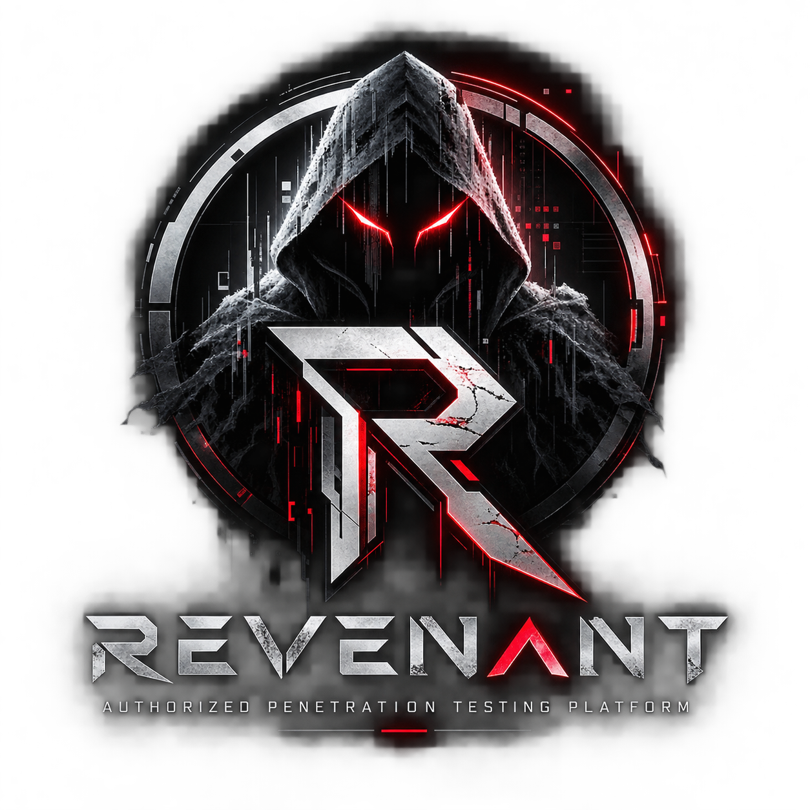

Engineering case study / Authorized Security Assessment Platform

REVENANT
Permission defines the boundary. Evidence gives the assessment meaning.
Concept / ArchitectureRuntime validation pending
Implementation language, framework and database: unverified.
The original overview documents the product concept and intended workflow. No implementation language, completed execution module or running control has been verified.
Authorized Security Assessment Platform / Original illustrative artwork
01 / purpose
An engagement is the unit of accountability.
REVENANT is intended to organize professional security assessments around a formally authorized engagement. Its concept addresses disconnected utilities and manually assembled notes: maintaining target scope, relating services to suspected weaknesses, retaining proof and tracking remediation retests.
Intended users are legitimate penetration testers, internal security teams, consulting firms and students working in owned labs. This is an assessment architecture profile, not evidence of deployed scanning functionality.
Project Overview / pp. 1–3
02 / workflow
Follow the source-defined workflow.
Engagement
Record the client and rules of engagement.
Scope
Define written authorization, allowed assets, exclusions and testing windows.
Reconnaissance
Proposed discovery stays within approved scope.
Enumeration
Organize permitted asset and service observations.
Assessment
Review suspected weaknesses; completion is unverified.
Controlled validation
Only expressly permitted safe validation is intended.
Evidence
Attach supporting observations to the engagement.
Findings
Record impact and actionable remediation.
Retest
Intended workflow checks remediation within renewed scope.
Report
Proposed executive and technical reporting supports review.
Project Overview / pp. 1–3
03 / architecture
Explore the responsibilities.
The original overview documents the product concept and intended workflow. No implementation language, completed execution module or running control has been verified. This map groups responsibilities, not verified endpoints, schemas or runtime call order.
Every component is conceptual; no execution module is verified. Connections explain relationships, not runtime calls. Every component has a static explanation below.
Select a component to read its responsibilities. The selected node has a thick outline; connected nodes have dashed outlines. Show all restores every explanation.
All 6 components shown.
Engagement
Concept / implementation unverified
The concept starts with client and engagement records, explicit authorization and rules of engagement.
Inputs / context
Written permission and an assessment objective.
Relationships / data flow
Engagement context frames scope and later evidence/findings.
Boundary / limitation
No implemented records model or authorization enforcement was inspected.
Project Overview / pp. 1–3
Scope boundary
Concept / implementation unverified
Approved targets, exclusions, time windows and execution limits are intended central constraints.
Inputs / context
Networks/domains explicitly permitted by the engagement.
Relationships / data flow
Discovery and validation should be checked against these rules before actions run.
Boundary / limitation
Allowlists, rate limits, stop controls and audit are proposed safeguards, not verified running controls.
Project Overview / pp. 1–3
Discovery
Concept / implementation unverified
The overview proposes asset/service discovery, network enumeration and web content discovery.
Inputs / context
Only targets allowed by the scope boundary.
Relationships / data flow
Observations would relate assets and services to assessment context.
Boundary / limitation
No scanner, integration, network module or programming language is confirmed.
Project Overview / pp. 1–3
Assessment
Concept / implementation unverified
Candidate weaknesses would be reviewed and safely validated where expressly permitted.
Inputs / context
Scoped observations and operator approval.
Relationships / data flow
Supporting observations would enter evidence and then findings.
Boundary / limitation
Controlled authentication assessment is a proposal; no unrestricted exploitation capability is claimed.
Project Overview / pp. 1–3
Evidence graph
Concept / implementation unverified
The intended engagement graph relates assets, ports, services, suspected weaknesses, tests and evidence.
Inputs / context
Authorized observations and allowed validation results.
Relationships / data flow
Evidence would support findings, remediation review and reporting.
Boundary / limitation
Graph library, schemas, provenance fields and integrity implementation are unknown.
Project Overview / pp. 1–3
Findings & retest
Concept / implementation unverified
Technical findings, remediation guidance, retesting and executive/technical reports complete the intended lifecycle.
Inputs / context
Evidence reviewed within the engagement.
Relationships / data flow
Retest observations would inform report conclusions.
Boundary / limitation
No completed reporting engine, remediation outcome or test result is established.
Project Overview / pp. 1–3
Project Overview / pp. 1–3
04 / capabilities
Scope and implementation boundaries.
Engagement-centered design
Permission, scope and exclusions are first-class concepts rather than implied authority.
Assessment orchestration
A service-oriented backend and job execution layer are architectural requirements; framework and languages remain unknown.
Connected evidence
An engagement graph is intended to preserve relationships between assets, suspected issues, tests and evidence.
Remediation continuity
Findings, retesting and reporting are proposed parts of one professional workflow.
Project Overview / pp. 1–3
05 / security
Controls with explicit evidence levels.
These descriptions retain the source’s evidence level. Documented controls and design intentions are not an independent security audit.
Central scope enforcement / intended
Target allowlists, exclusions, time windows, rate limits and audit logs should constrain every action.
Operator accountability / intended
Activity logs, stop controls and approval-aware workflows are proposed. Their coverage and enforcement have not been tested.
Controlled validation / intended
Only expressly authorized safe verification is in scope. High-risk activity requires separate legal, safety and engineering review.
No implied authority
Discovery does not establish testing permission. This case study is not a working scanner or an authorization mechanism.
Project Overview / pp. 1–3
06 / validation
What the sources establish.
The original overview documents the product concept and intended workflow. No implementation language, completed execution module or running control has been verified.
Current codebase, exact stack, database engine, execution modules and completion state are unknown.
The practical example in the overview is illustrative, not an actual engagement or demonstrated outcome.
No deployment, scanning benchmark, passing project test or security assurance is asserted.
Portfolio tests validate this website, not underlying project outcomes.